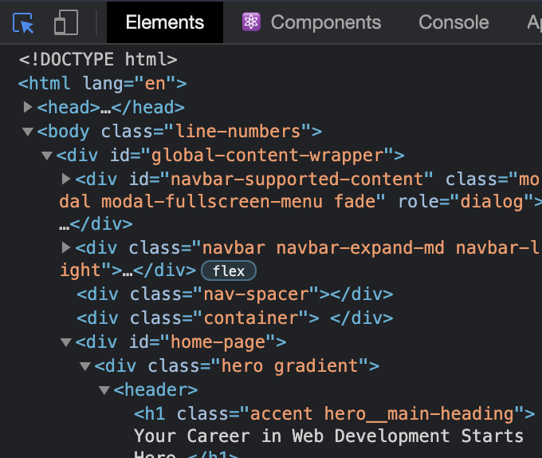
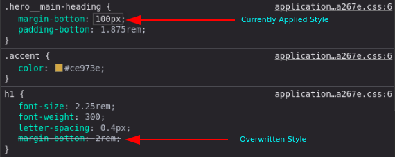

In the Elements panel, you can see the entire HTML structure of your page. You can click on any of the elements in this panel to select that specific element. Alternatively, you can click the blue-highlighted icon in the top-left and hover over every element on the page.
When an element is selected, the Styles tab will show all the currently applied styles, as well as any styles that are being overwritten (indicated by a strikethrough of the text).
The Styles panel also allows you to edits styles directly in your browser. You can click inside of any individual selector to add a new rule or click on an existing attribute or value to alter it. When doing so, the webpage will show the changes but it wont affect your source code.